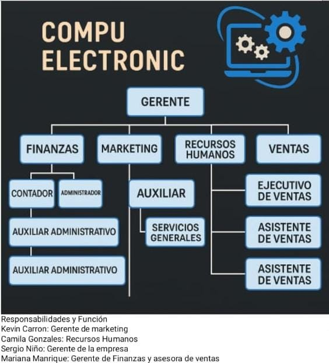

¿Quiénes somos?
Somos una empresa comprometida con el cuidado, mantenimiento y optimización de los equipos de cómputo. Nacimos con el propósito de brindar soluciones tecnológicas confiables que permitan a nuestros clientes trabajar de manera segura, ágil y sin interrupciones. En un mundo donde la tecnología avanza a pasos acelerados, entendemos que los computadores son herramientas esenciales tanto en el ámbito académico como empresarial. Por eso, nuestro equipo de profesionales se dedica a garantizar que cada equipo funcione en perfectas condiciones, ofreciendo un servicio integral que combina conocimiento técnico, experiencia práctica y atención personalizada. Nuestra filosofía se centra en la confianza, la responsabilidad y la innovación constante. No solo reparamos o mantenemos tus equipos, también buscamos enseñarte lo esencial para que tengas mayor control y cuidado de tus herramientas tecnológicas.S
¿Porque elegirnos?
optar por un aliado estratégico que se preocupa genuinamente por el funcionamiento de tus equipos. No solo somos una empresa más de mantenimiento, nos destacamos porque trabajamos con pasión, compromiso y un enfoque humano. Confianza y transparencia, te explicamos cada proceso, cada diagnóstico y cada solución de forma clara, sin tecnicismos innecesarios. Con experiencia y profesionalismo nuestro equipo está preparado para resolver desde fallas simples hasta problemas complejos.
Tentra prevención y acompañamiento más allá de arreglar, buscamos prevenir futuros daños para que tus equipos tengan una vida útil más larga. Adaptabilid ad, entendemos que cada cliente es único, por eso diseñamos soluciones personalizadas que se ajustan a tus necesidades y presupuesto La ce canía y servicio humano hace que no solo cuidemos tus equipos, también cuidamos tu confianza, porque sabemos lo valiosa que es tu información y tu tiempo. Con nosotros tienes la seguridad de que tus equipos estarán en manos de personas que trabajan con seriedad, compromiso y dedicación, siempre buscando superar tus expectativas.
Módulo Operativo
Mantenimiento Preventivo
El mantenimiento preventivo es un conjunto de acciones planificadas que se realizan periódicamente a los equipos con el propósito de evitar fallas, deterioro prematuro o interrupciones inesperadas en su funcionamiento. A diferencia del mantenimiento correctivo, que se aplica cuando el daño ya está presente, el mantenimiento preventivo busca anticiparse a los problemas y mantener los equipos en condiciones óptimas.
En el caso de los computadores y equipos electrónicos, el mantenimiento preventivo incluye tareas como:
Limpieza física: eliminación de polvo, suciedad y residuos en ventiladores, fuentes de poder, tarjetas y demás componentes internos y externos.
Revisión de software: actualización del sistema operativo, instalación de parches de seguridad, desinstalación de programas innecesarios y optimización del arranque del sistema.
Chequeo eléctrico y conexiones: verificación de cables, puertos, fuentes de poder y dispositivos periféricos.
Control de temperatura: inspección del sistema de ventilación y aplicación de pasta térmica si es necesario, para prevenir el sobrecalentamiento.
Seguridad informática: ejecución de análisis con antivirus, revisión de firewalls y creación de copias de seguridad.
Pruebas de funcionamiento: comprobación del rendimiento general del equipo, asegurando que los recursos de hardware y software trabajen de manera estable y eficiente.
Mantenimiento Correctivo
El mantenimiento correctivo consiste en las acciones que se realizan sobre un equipo, máquina o sistema después de que presenta una falla o avería, con el fin de restaurar su funcionamiento normal. Su principal objetivo es reparar o sustituir las partes dañadas para que el activo pueda seguir operando correctamente.
Este tipo de mantenimiento puede clasificarse en:
- Correctivo planificado: cuando se programa la reparación para un momento específico, minimizando el impacto en la operación.
- Correctivo no planificado: cuando la reparación debe realizarse de inmediato, debido a que la falla detiene por completo el funcionamiento.
Aunque el mantenimiento correctivo es necesario, generalmente implica mayores costos y tiempos de inactividad, por lo que se recomienda complementarlo con estrategias de mantenimiento preventivo.
Ejemplos de mantenimiento correctivo:
- Reparar un motor que dejó de funcionar.
- Sustituir la tarjeta madre de un computador dañado.
- Cambiar el rodillo de una impresora que se averió.
Mantenimiento Predictivo
El mantenimiento predictivo es una estrategia que busca anticipar las fallas de un equipo antes de que ocurran, mediante el monitoreo constante de su estado y rendimiento. Se basa en el análisis de datos, mediciones técnicas y el uso de herramientas especializadas para determinar en qué momento será necesario realizar una reparación o sustitución. Su principal objetivo es predecir el momento óptimo para intervenir, evitando paradas imprevistas y prolongando la vida útil de los activos.
Entre las técnicas más utilizadas en el mantenimiento predictivo se encuentran:
- Análisis de vibraciones (para motores, turbinas, compresores).
- Termografía infrarroja (detección de puntos de sobrecalentamiento).
- Ultrasonido (detección de fugas y desgastes internos).
- Análisis de aceites y lubricantes (para identificar desgaste en piezas internas).
Ventajas principales:
- Reduce costos al evitar fallas graves.
- Disminuye paradas no planificadas.
- Optimiza la vida útil de los equipos.
- Permite programar intervenciones con mayor precisión.
Ejemplos de mantenimiento predictivo:
- Medir la vibración de un motor eléctrico para detectar desbalanceo antes de que se dañe.
- Usar cámaras térmicas para localizar cables sobrecalentados en un sistema eléctrico.
- Analizar el aceite de una máquina para identificar partículas metálicas que indiquen desgaste interno.
Módulo Estratégico
Misión
somos una empresa especializada en el mantenimiento de computadores, nos basamos en el buen servicio tecnico haciendo que mediante nuestro trabajo prolonguemos la vida util de los equipos de computo, gracias a esto podemos garantizar la satisfaccion del cliente. Tenemos altos estandares y nuestros talleres de reparacion para lograr suplir una necesidad de nuestra sociedad actual. nos diferenciamos de las otras empresas ya que realizamos jornadas de capacitaion basica para nuestros clientes que esten interesados en tener un aprendizaje basico en el mundo del computo.
Visión
ser una empresa caracterizada y reconocida por la calidad que le brindamos a nuestros clientes al momento de repara los equipos electronicos con esto fomentamos las habilidades y desarrollamos formacion basica para la vida util de los equipos de computo, con esto lo que queremos es que a cinco años estar liderando la industria, brindando ideas imnovadoras y peculiares que se adapten a las necesiades de cada usuario.
Objetivos
objetivos a corto plazo
- establecer una base de clientes solida.
- asegurar calidad y satisfacción del cliente
- establecer alianzas estratégicas
objetivos a mediano plazo
- expandir la gama de servicios
- aumentar la participación en el mercado
- establecer una presencia online fuerte
objetivos a largo plazo
- obtener certificaciones y reconocimientos
- implementar servicios de sistemas de gestión eficientes
- variar las fuentes de ingresos
Justificación
La creación de la empresa se basa en tener los equipos de computo de nuestros clientes en un perfecto estado, para suplir la necesidad de nuestra sociedad actual que se ha visto últimaménte involucrada en el ámbito de la tecnología. Esto ser empezó a ver un poco mas desde la pandemia (2020-2021), Nosotros generamos dos posibles soluciones. Con nuestras jornadas de educación para que aquel que este interesado pueda aprender lo básico de mantenimiento de equipos de cómputo y no sea necesario llevarlo a algún servicio técnico y pueda ahorrar más dinero. Otra solución que brindamos es que en nuestros talleres especializados podamos tener mas equipos de trabajo necesarios que puedan emplear un mantenimiento en varias comunidades y que Nuestra sociedad tenga mejor tecnología. y en el operativo va esto
Galería


Módulo Organizacional
Organigrama
Estructura organizacional adaptada a la prestación de servicios tecnológicos.
Sostenibilidad
En Compu Electronic entendemos que el futuro depende de las decisiones responsables que tomamos hoy. Por eso, trabajamos bajo principios de sostenibilidad ambiental, social y económica, aplicados a nuestros servicios de mantenimiento de cómputo en Cajicá, Cundinamarca y alrededores.
Responsabilidad Social
Priorizamos la reparación y reutilización de equipos para reducir la generación de residuos electrónicos. Realizamos una disposición responsable de componentes dañados o en desuso, trabajando con gestores autorizados para su reciclaje. Sostenibilidad Social
Apoyamos el desarrollo local contratando talento técnico de Cajicá y municipios cercanos. Promovemos el acceso a la tecnología mediante capacitaciones básicas gratuitas en mantenimiento preventivo para comunidades vulnerables. Sostenibilidad Económica
Ofrecemos servicios accesibles y de alta calidad, generando valor a largo plazo para nuestros clientes. Apostamos por relaciones duraderas y éticas con proveedores, aliados y usuarios. Nuestro compromiso con la sostenibilidad no es solo una política: es parte de nuestra identidad. En Compu Electronic, cuidamos tus equipos y también el entorno donde vivimos.

Planes y Precios
Paquete Básico
Check Up Express ✅
Limpieza, revisión, optimización básica.
$900.000 COP
Paquete Intermedio
Rendimiento Plus 🔧
Incluye antivirus, drivers, optimización avanzada.
$1.200.000 COP
Paquete Premium
Máximo Desempeño 🛠️
Respaldo, programas básicos, copias automáticas.
$1.500.000 COP
Paquete Empresarial
Protección Total 🏢
Preventivo programado, monitoreo y asesoría.
$3.500.000 COP/año (10 equipos)
Mantenimiento Preventivo
- Limpieza física interna (polvo, pasta térmica)
- Limpieza de software
- Revisión de cables y conexiones
- Actualización de programas y antivirus
Mantenimiento Correctivo
- Reemplazo de piezas defectuosas
- Eliminación de virus y malware
- Reparación de errores de software
- Formateo y reinstalación del sistema
Mantenimiento Predictivo
- Monitoreo de temperatura y voltajes
- Diagnóstico para anticipar fallas
- Análisis del rendimiento
- Alertas automatizadas
Planes
Tipo: Preventivo. Limpieza interna y externa, revisión de hardware, optimización básica y actualización de antivirus.